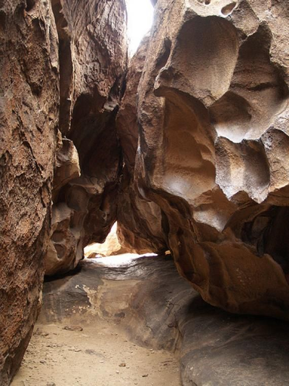
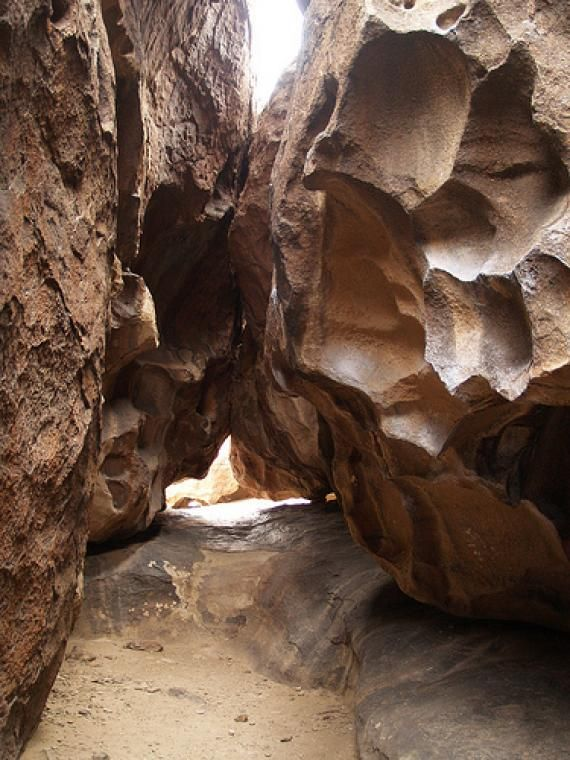

The Sun City
What To Do in El Paso?
 

Scenic Drive
"The overlook is just so amazing that you can even see Mexico and all of El Paso from it" Says one El Pasoan. The view includes cityscapes but also has the mountains and landscape in its view. Even on foggy or bad weather days, it’s absolutely breathtaking.
Price: FreeAge Range: All Ages
Hueco Tanks Hiking Trail
Hueco Tanks Nature Trail is a 1.9 mile moderately trafficked out and back trail located near El Paso, Texas that features a river and is rated as moderate. The trail offers a number of activity options and is accessible year-round.
Price: FreeAge Range: All Ages
El Paso Museum of Art
El Paso Museum is a Museum located in Downtown El Paso."You may not find one of the world's greatest collections of art here, but the collection is both diverse and excellent.",says one user, while it is not Le Louvre, it is a highlight of many people's trip to El Paso.
Price: FreeAge Range: All Ages